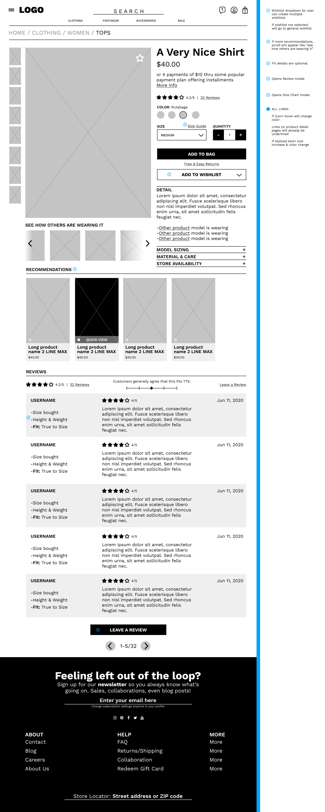
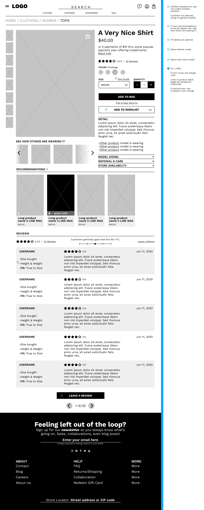
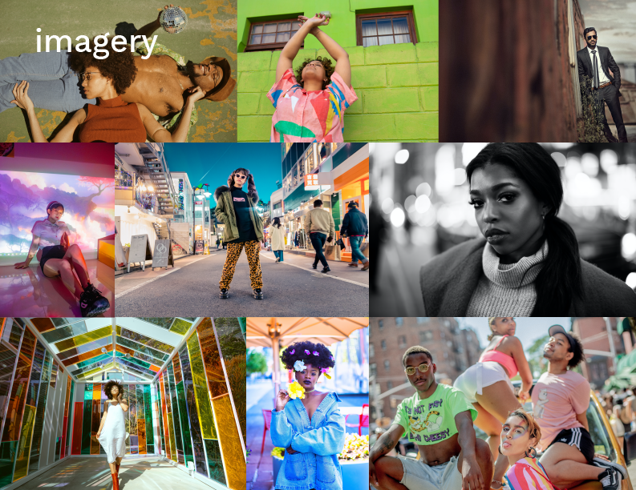

Building Blueprints
Wireframing
With the basics built out, I moved on to wireframing. Before creating digital lo-fi renderings of Mirror, I sketched a few wireframes of competitor's sites so that I could get a feel for what made for an enjoyable, immersive experience and what didn't. As the goal was to give myself a rough idea of what worked and didn't work, I didn't let sketching take longer than five minutes per drawing.

Because the assignment was to build out a prototype including the three most important pages of the site, I made the product listings and product page when creating higher fidelity wireframes. I included annotations to indicate any micro-interactions that couldn't be included in the wireframes.
 

I created responsive UIs for each of these page when I was creating the high-fidelity prototype.
UI Kit & Branding
Because one of the goals was to give Mirror a new visual identity alongside its e-commerce debut, I created a new logo and style guide that also informed the UI for the project.
